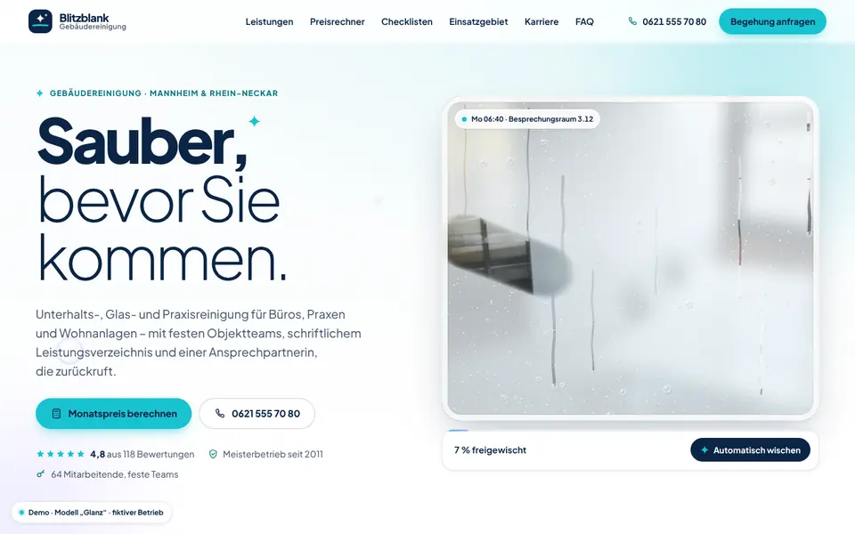
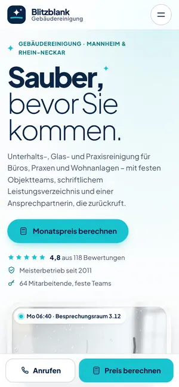

Case Study 14 / 30 · Handwerk & Bau
Blitzblank Gebäudereinigung
Modell „Glanz“
Helle Reinigungs-Demo mit freiwischbarer Scheibe im Hero, Angebotsrechner und Leistungs-Checklisten.


Ausgangslage
Blitzblank ist ein erfundener Gebäudereinigungsbetrieb in Mannheim für Büros, Glas, Praxen und Treppenhäuser. Gewerbliche Kunden wollen vor der Begehung eine Preisidee, wissen, was eine Unterhaltsreinigung konkret umfasst, und ob ihr Standort im Einsatzgebiet liegt. Zugleich braucht der Betrieb Personal und muss Schichtmodelle verständlich machen.
Idee
Das Modell „Glanz“ ist hell, frisch und sehr klar: Weiß, Aqua und Marine, dazu sparsam ein Seifenblasen-Lila und ein Hellgrau für Flächen. Eine einzige Schrift, Plus Jakarta Sans, trägt mit starken Gewichtskontrasten die Hierarchie. Glanzlichter, Wisch-Effekte und Blasen bleiben Mikroanimationen – das Thema Sauberkeit wird gezeigt, nicht behauptet.
Was die Seite kann
- Wisch-Reveal im HeroEine beschlagene Scheibe als Canvas mit Tröpfchen und Laufspuren, die du mit Maus oder Finger freiwischst; ab 60 Prozent freier Fläche wird fertig gewischt, ein Knopf „Automatisch wischen“ dient der Tastaturbedienung.
- AngebotsrechnerObjektart, Fläche per Schieberegler und Zahlenfeld, Intervall und Zusatzleistungen ergeben eine Monatspreis-Spanne, einen Wochenplan und Einsätze, Stunden und Teamgröße; die Werte lassen sich in die Anfrage übernehmen.
- Leistungs-ChecklistenTabs je Reinigungsart mit aufklappbaren Gruppen, Häkchen-Animation und „Alle aufklappen“.
- Einsatzgebiet-CheckPLZ eingeben oder Schnellwahl – ein Pin fliegt auf die SVG-Karte Rhein-Neckar, Zone (12, 25, 40 km) und Entfernung werden hervorgehoben.
- KarriereSchichtmodelle als Schalter (role="switch") mit Tageszeitleiste, gefilterte Stellen und eine Kurzbewerbung mit Countdown-Ring.
- Leistungen als StreckeFünf Reinigungsarten laufen auf dem Desktop als gepinnte horizontale Fahrt, auf dem Handy als Raster.
Dein Betrieb
So eine Seite für dich?
Schreib mir kurz, was du anbietest und was deine Website leisten soll. Du bekommst eine ehrliche Einschätzung, was sie kostet und was sie dir bringen kann.
Projekt anfragen